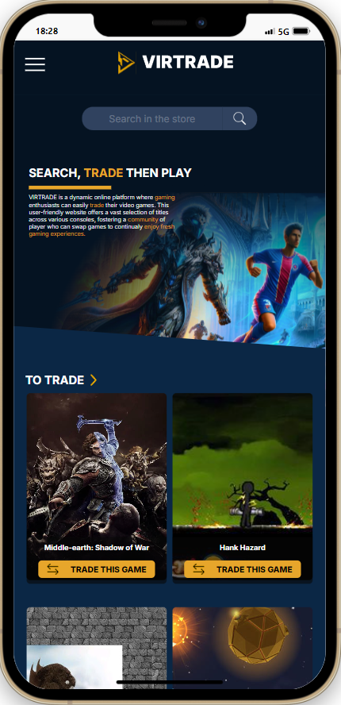

Après avoir travaillé dans différents secteurs d'activités
(gendarmerie, agent de sécurité, agent de production, transport de
sang) l'envie m'est venu de changer complètement de métier.
Cette envie m'est apparu, courant du mois de mai 2023, quand j'ai
décidé de me lancer un défi, créer un site internet pour mon
mariage.
N'ayant aucune expérience dans le milieu du développement, je me suis
aidé de tutoriels sur YouTube. Me voilà parti pour plusieurs mois de
découverte et de développement en HTML/CSS.
C'est en développant ce site que l'envie d'en apprendre davantage sur
le milieu du dév est apparue. Je me suis alors inscrit à une formation
(d'une durée de 5 mois en Full Remote).
Aimant ce que je faisais durant cette formation, j'ai décidé
d'entreprendre une reconversion professionnelle dans ce nouveau
milieu.
HTML
CSS
JavaScript
ReactJS
ExpressJS
NodeJS
MySQL
C#
Unity
Patient
Esprit d'équipe
Persévérent
Gestion du stress
Adaptabilité
Voici le site de mon mariage, il est simplement fait en HTML/CSS. C'est le développement de celui-ci qui m'a donné l'envie de m'engager dans le développement web.
Technos : HTML / CSS
Aimant l'automobile, j'ai décidé, comme premier projet personnel, de créer un site où les passionnés de voitures pourraient se créer un compte et partager des images de leur propre véhicule ou bien de la voiture de leur rêve.
Technos : ReactJS / ExpressJS / NodeJS / MySQL
Virtrade est un site destiné aux passionnés de jeux vidéo, ils pourront se créer un compte, ajouter des jeux qu'ils ont en leur possession afin de les échanger avec d'autres utilisateurs.
Technos : ReactJS / ExpressJS / NodeJS / MySQL
Miamtastic est un site regroupant des recettes de cuisine, mais aussi, il vous permet de trouver des recettes en renseignant les ingrédients qu'il vous reste dans votre frigo.
Technos : ReactJS
Pitance Express est une application sur mobile qui vous permet de commander des plats, venant tout droit du moyen-âge, à la mode d'Uber Eats.
Technos : ReactJs
DeezTube est un petit mélange entre Deezer et YouTube, un petit site vous proposant quelques musiques et vidéos sur le thème de Noël.
Technos : ReactJS